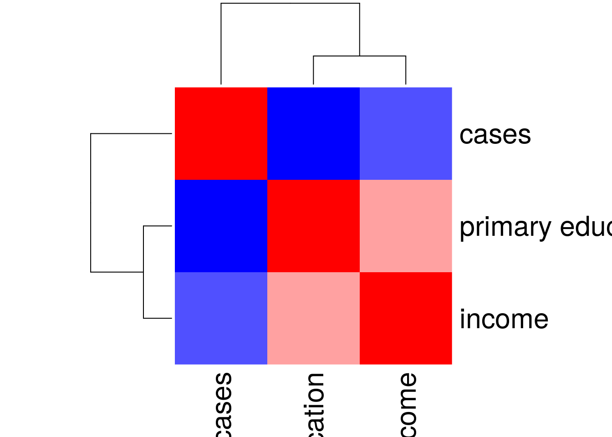
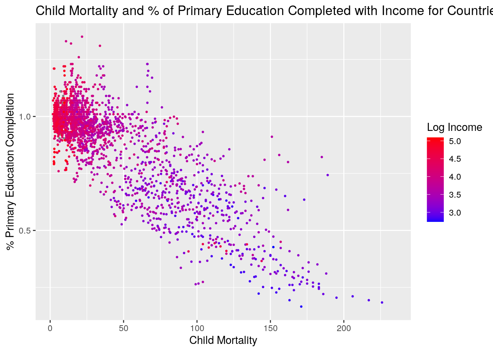
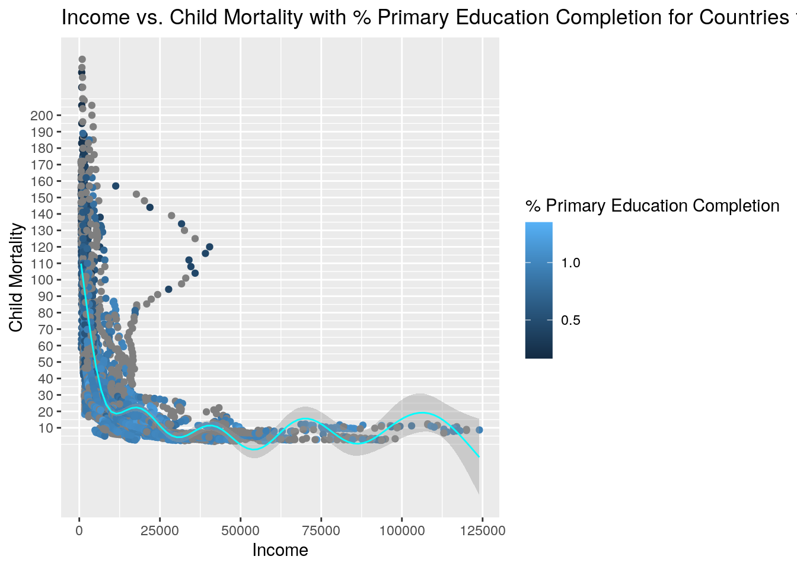
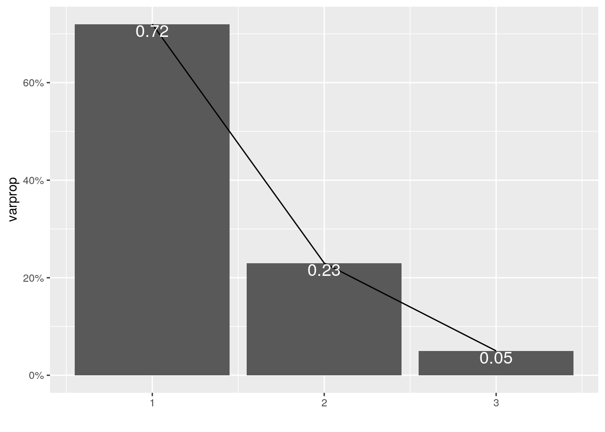
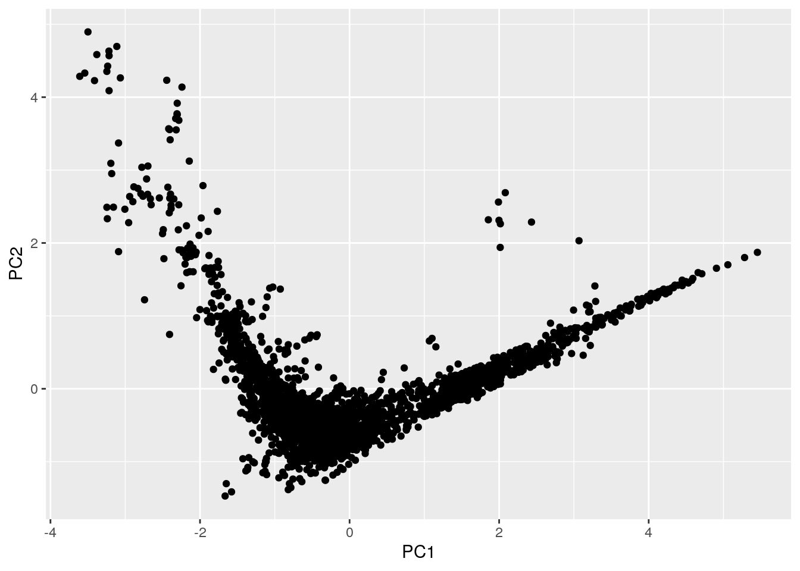

library(dplyr)
library(tidyr)
library(ggplot2)
library(tibble)
library(readr)
### Importing data sets
child_mortality_0_5_year_olds_dying_per_1000_born <- read_csv("child_mortality_0_5_year_olds_dying_per_1000_born.csv")
income_per_person_gdppercapita_ppp_inflation_adjusted <- read_csv("income_per_person_gdppercapita_ppp_inflation_adjusted.csv")
primary_completion_rate_total_percent_of_relevant_age_group <- read_csv("primary_completion_rate_total_percent_of_relevant_age_group.csv")The datasets that I picked for this project is child mortality for children ages 0-5 per 1000 births, the income per person (GDP capita inflation adjsuted), and the primary completion rate for the total percent of the relevant age group. These datasets have fairly similar variables. The child mortality dataset has the following variables: year, country, child mortality rate for ages 0-5 (per 1000 births). The income dataset has the following variables: country, year, and income. The primary completion dataset has the following variables: country, year, and % of primary school education completed. I acquired these datasets through a website called gapminder.com, under the data subsection of the site. This data was interesting to me because I wanted to see if income of a country would have any correlation to the child mortality rate and the percent of students who complete their primary school education. These are profound variables that are very commonly studied, and it interested me to identify if these variables relate to each other. I expect that as the income of the country decreases, the child mortality rate should go up and the percent of children who finish their primary school education should should go down. A similarly correlating trend should persist when looking at the increase in the income of a country.
tidy_childmortality <- child_mortality_0_5_year_olds_dying_per_1000_born %>%
pivot_longer(c("2000", "2001", "2002", "2003", "2004", "2005",
"2006", "2007", "2008", "2009", "2010", "2011", "2012",
"2013", "2014", "2015", "2016", "2017", "2018"), names_to = "year",
values_to = "cases")
tidy_primary <- primary_completion_rate_total_percent_of_relevant_age_group %>%
pivot_longer(c("2000", "2001", "2002", "2003", "2004", "2005",
"2006", "2007", "2008", "2009", "2010", "2011", "2012",
"2013", "2014", "2015", "2016", "2017", "2018"), names_to = "year",
values_to = "primary education")
tidy_income <- income_per_person_gdppercapita_ppp_inflation_adjusted %>%
pivot_longer(c("2000", "2001", "2002", "2003", "2004", "2005",
"2006", "2007", "2008", "2009", "2010", "2011", "2012",
"2013", "2014", "2015", "2016", "2017", "2018"), names_to = "year",
values_to = "income")
tidy_childmortality %>% na.omit()## # A tibble: 3,705 x 3
## country year cases
## <chr> <chr> <dbl>
## 1 Afghanistan 2000 129
## 2 Afghanistan 2001 125
## 3 Afghanistan 2002 121
## 4 Afghanistan 2003 117
## 5 Afghanistan 2004 113
## 6 Afghanistan 2005 109
## 7 Afghanistan 2006 104
## 8 Afghanistan 2007 100
## 9 Afghanistan 2008 96
## 10 Afghanistan 2009 91.9
## # … with 3,695 more rowstidy_income %>% na.omit()## # A tibble: 3,667 x 3
## country year income
## <chr> <chr> <dbl>
## 1 Afghanistan 2000 687
## 2 Afghanistan 2001 646
## 3 Afghanistan 2002 1020
## 4 Afghanistan 2003 1060
## 5 Afghanistan 2004 1030
## 6 Afghanistan 2005 1100
## 7 Afghanistan 2006 1120
## 8 Afghanistan 2007 1250
## 9 Afghanistan 2008 1270
## 10 Afghanistan 2009 1500
## # … with 3,657 more rowstidy_primary %>% na.omit()## # A tibble: 2,304 x 3
## country year `primary education`
## <chr> <chr> <dbl>
## 1 Afghanistan 2016 0.799
## 2 Afghanistan 2017 0.844
## 3 Afghanistan 2018 0.856
## 4 Albania 2000 0.966
## 5 Albania 2001 0.964
## 6 Albania 2003 0.944
## 7 Albania 2004 0.934
## 8 Albania 2007 0.962
## 9 Albania 2008 0.924
## 10 Albania 2009 0.911
## # … with 2,294 more rowsAll of the datasets had to undergo a tidy, since they were not so to begin with. In the datasets that I initially had, the column headers were dates. The tidy function was run on these and a new column for each value was created. "tidy_childmortality" created a column for "cases" and a column for "year". In the "tidy_income" dataset, a new column was made for "year" and "income". And finally in the "tidy_primary" data set, a new column was made for the "year" and "primary education". This was done using the pivot_longer function, which created a new column in each of the datasets, one for the year and the other for the respective value. There were some N/A values and those had to be omitted with the na.omit function.
Merged_Data <- tidy_childmortality %>% left_join(tidy_income) %>%
left_join(tidy_primary)In order to merge the datasets, the left_join function was used. This function was used because it merges all of the data sets based on what columns match in each dataset. To begin with, the tidy_childmortality data set had 3,705 observations with 3 variables. The tidy_income data set had 3,667 observations with 3 variables. The tidy_primary dataset had 3,515 observations with 3 variables. There are two variables in each dataset that were the same, the year and the country.
Summary Statistics with Core Dplyr Functions
### Correlation Matrix
cormat <- Merged_Data %>% na.omit() %>% select_if(is.numeric) %>%
cor()
cormat## cases income primary education
## cases 1.0000000 -0.4906608 -0.8344921
## income -0.4906608 1.0000000 0.3724872
## primary education -0.8344921 0.3724872 1.0000000The select function was used to create the correlation matrix of all of the numeric values in the merged data. According to this matrix, there is a relatively strong negative correlation between primary education completion rates and child mortality rates. This means that as the the rate of primary education completion goes up, the child mortality rate for children ages 0-5 goes down. When it comes to child mortality rate and income, there is a negative correlation. Even though it is not as strong, this means that as the child mortality rate increases, the income decreases. Finally, there is a weak positive correlation between primary education completion rate and income. As the primary education completion rate goes up, the income also increases, even though it is a weak correlation.
### Average Income Based on Country
Merged_Data %>% group_by(country) %>% summarize(mean(income,
na.rm = T))## # A tibble: 195 x 2
## country `mean(income, na.rm = T)`
## <chr> <dbl>
## 1 Afghanistan 1389.
## 2 Albania 9050
## 3 Algeria 12584.
## 4 Andorra 41200
## 5 Angola 5686.
## 6 Antigua and Barbuda 21884.
## 7 Argentina 17232.
## 8 Armenia 6444.
## 9 Australia 40905.
## 10 Austria 42884.
## # … with 185 more rowsUsing the group_by function, I was able to isolate and calculate the average income for each country. The values are given in the table. Based on this, the country with the highest mean income is Qatar (114,736.8421) and the country with the lowest mean income is Somalia (615.8947).
### Filter for Year and Sorting by Child Mortality
Merged_Data %>% filter(year == "2018") %>% arrange(desc(cases,
na.rm = T))## # A tibble: 195 x 5
## country year cases income `primary education`
## <chr> <chr> <dbl> <dbl> <dbl>
## 1 Somalia 2018 122 629 NA
## 2 Nigeria 2018 120 5320 NA
## 3 Chad 2018 119 1750 NA
## 4 Central African Republic 2018 116 775 NA
## 5 Sierra Leone 2018 105 1430 0.818
## 6 Guinea 2018 101 2340 NA
## 7 South Sudan 2018 98.6 1770 NA
## 8 Mali 2018 97.8 2060 NA
## 9 Benin 2018 93 2150 NA
## 10 Congo, Dem. Rep. 2018 88.1 827 NA
## # … with 185 more rowsUsing the filter and arrange functions, I was able to isolate the data from all the countries into a single year to focus on. I picked 2018, since that was the latest year in all of the datasets. Once I filtered the data to only show data from 2018, I used the arrange function to arrange the data based on cases of child mortality. From this, I can tell that Somalia has the highest child mortality rates, compared to all of the other countries in this dataset.
### Using mutate function
Merged_Data %>% mutate(cases_by_100 = cases/10)## # A tibble: 3,705 x 6
## country year cases income `primary education` cases_by_100
## <chr> <chr> <dbl> <dbl> <dbl> <dbl>
## 1 Afghanistan 2000 129 687 NA 12.9
## 2 Afghanistan 2001 125 646 NA 12.5
## 3 Afghanistan 2002 121 1020 NA 12.1
## 4 Afghanistan 2003 117 1060 NA 11.7
## 5 Afghanistan 2004 113 1030 NA 11.3
## 6 Afghanistan 2005 109 1100 NA 10.9
## 7 Afghanistan 2006 104 1120 NA 10.4
## 8 Afghanistan 2007 100 1250 NA 10
## 9 Afghanistan 2008 96 1270 NA 9.6
## 10 Afghanistan 2009 91.9 1500 NA 9.19
## # … with 3,695 more rowsA new variable was created using the mutate function. This new variable, "cases_by_100"", represents the child mortality rate per every 100 births. The old "cases variable was the child mortality rate per every 1000 births. The mutate function allows us to create a new variable by manipulating another variable in the data set. This is usually helpful to make large numbers smaller on a scale so that analysis is easier.
Summary Statistics With Summary and Group_by
### Mean of each Variable given the Country
Merged_Data %>% group_by(country) %>% summarize_if(is.numeric,
mean, na.rm = T) %>% head()## # A tibble: 6 x 4
## country cases income `primary education`
## <chr> <dbl> <dbl> <dbl>
## 1 Afghanistan 93.4 1389. 0.833
## 2 Albania 15.5 9050 0.959
## 3 Algeria 30.0 12584. 0.970
## 4 Andorra 4.48 41200 NaN
## 5 Angola 135. 5686. 0.41
## 6 Antigua and Barbuda 10.5 21884. 1.03This above shows the mean of each variable and is separated by different countries. This was grouped by country, using the group_by function and then the summarize function was used to calculate the mean of each numeric variable in the dataset.
### Standard Deviation of each Variable given the Country
Merged_Data %>% group_by(country) %>% summarize_if(is.numeric,
sd, na.rm = T) %>% head()## # A tibble: 6 x 4
## country cases income `primary education`
## <chr> <dbl> <dbl> <dbl>
## 1 Afghanistan 21.5 394. 0.0300
## 2 Albania 5.66 2127. 0.0430
## 3 Algeria 5.42 1140. 0.0937
## 4 Andorra 1.13 5904. NA
## 5 Angola 43.7 1009. 0.0349
## 6 Antigua and Barbuda 3.01 2113. 0.0682This above shows the standard deviation of each variable and is separated by different countries. This was grouped by country, using the group_by function and then the summarize function was used to calculate the standard deviation of each numeric variable in the dataset.
### Variation of each Variable given the Country
Merged_Data %>% group_by(country) %>% summarize_if(is.numeric,
var, na.rm = T) %>% head()## # A tibble: 6 x 4
## country cases income `primary education`
## <chr> <dbl> <dbl> <dbl>
## 1 Afghanistan 462. 155102. 0.000903
## 2 Albania 32.1 4523067. 0.00185
## 3 Algeria 29.4 1299181. 0.00879
## 4 Andorra 1.27 34858889. NA
## 5 Angola 1910. 1018402. 0.00122
## 6 Antigua and Barbuda 9.06 4463626. 0.00465This above shows the variation of each variable and is separated by different countries. This was grouped by country, using the group_by function and then the summarize function was used to calculate the variation of each numeric variable in the dataset. The higher the variation number means that there is more variation within that variable in the data set.
### Minimum of each Variable given the Country
Merged_Data %>% group_by(country) %>% summarize_if(is.numeric,
min, na.rm = T) %>% head()## # A tibble: 6 x 4
## country cases income `primary education`
## <chr> <dbl> <dbl> <dbl>
## 1 Afghanistan 62.3 646 0.799
## 2 Albania 8.82 5440 0.888
## 3 Algeria 23.5 10300 0.802
## 4 Andorra 2.89 31700 Inf
## 5 Angola 77.2 3890 0.388
## 6 Antigua and Barbuda 6.44 19400 0.926This above shows the minimum of each variable and is separated by different countries. This was grouped by country, using the group_by function and then the summarize function was used to calculate the minimum of each numeric variable in the dataset.
### Maximum of each Variable given the Country
Merged_Data %>% group_by(country) %>% summarize_if(is.numeric,
max, na.rm = T) %>% head()## # A tibble: 6 x 4
## country cases income `primary education`
## <chr> <dbl> <dbl> <dbl>
## 1 Afghanistan 129 1810 0.856
## 2 Albania 25.9 12300 1.02
## 3 Algeria 39.7 13900 1.13
## 4 Andorra 6.41 51500 -Inf
## 5 Angola 206 6810 0.462
## 6 Antigua and Barbuda 15.8 26500 1.11This above shows the maximum of each variable and is separated by different countries. This was grouped by country, using the group_by function and then the summarize function was used to calculate the maximum of each numeric variable in the dataset.
### Mean of each Variable given the Year
Merged_Data %>% group_by(year) %>% summarize_if(is.numeric, mean,
na.rm = T) %>% head()## # A tibble: 6 x 4
## year cases income `primary education`
## <chr> <dbl> <dbl> <dbl>
## 1 2000 56.3 14236. 0.812
## 2 2001 54.3 14394. 0.836
## 3 2002 52.1 14577. 0.848
## 4 2003 50.1 14900. 0.859
## 5 2004 48.2 15489. 0.862
## 6 2005 46.1 15898. 0.873This above shows the mean of each variable and is separated by different years. This was grouped by year, using the group_by function and then the summarize function was used to calculate the mean of each numeric variable in the dataset. Since this grouped by year, this data include the numeric values for all of the countries in a given year.
### Standard Deviation of each Variable given the Year
Merged_Data %>% group_by(year) %>% summarize_if(is.numeric, sd,
na.rm = T) %>% head()## # A tibble: 6 x 4
## year cases income `primary education`
## <chr> <dbl> <dbl> <dbl>
## 1 2000 56.8 18512. 0.252
## 2 2001 55.0 18531. 0.253
## 3 2002 52.9 18653. 0.242
## 4 2003 50.9 18980. 0.222
## 5 2004 48.8 19616. 0.216
## 6 2005 47.0 19624. 0.219This above shows the standard deviation of each variable and is separated by different years. This was grouped by year, using the group_by function and then the summarize function was used to calculate the standard deviation of each numeric variable in the dataset. Since this grouped by year, this data include the numeric values for all of the countries in a given year.
### Variation of each Variable given the Year
Merged_Data %>% group_by(year) %>% summarize_if(is.numeric, var,
na.rm = T) %>% head()## # A tibble: 6 x 4
## year cases income `primary education`
## <chr> <dbl> <dbl> <dbl>
## 1 2000 3231. 342707229. 0.0635
## 2 2001 3020. 343401862. 0.0642
## 3 2002 2798. 347921738. 0.0586
## 4 2003 2589. 360221714. 0.0494
## 5 2004 2384. 384771396. 0.0468
## 6 2005 2207. 385094342. 0.0479This above shows the variation of each variable and is separated by different years. This was grouped by year, using the group_by function and then the summarize function was used to calculate the variation of each numeric variable in the dataset. Since this grouped by year, this data include the numeric values for all of the countries in a given year.
### Minimum of each Variable given the Year
Merged_Data %>% group_by(year) %>% summarize_if(is.numeric, min,
na.rm = T) %>% head()## # A tibble: 6 x 4
## year cases income `primary education`
## <chr> <dbl> <dbl> <dbl>
## 1 2000 3.86 573 0.166
## 2 2001 3.6 545 0.194
## 3 2002 3.38 545 0.211
## 4 2003 3.2 558 0.205
## 5 2004 3.06 577 0.238
## 6 2005 2.96 594 0.261This above shows the minimum value of each variable and is separated by different years. This was grouped by year, using the group_by function and then the summarize function was used to calculate the minimum of each numeric variable in the dataset. Since this grouped by year, this data include the numeric values for all of the countries in a given year.
### Maximum of each Variable given the Year
Merged_Data %>% group_by(year) %>% summarize_if(is.numeric, max,
na.rm = T) %>% head()## # A tibble: 6 x 4
## year cases income `primary education`
## <chr> <dbl> <dbl> <dbl>
## 1 2000 234 108000 1.19
## 2 2001 229 108000 1.22
## 3 2002 223 111000 1.33
## 4 2003 217 109000 1.2
## 5 2004 210 117000 1.23
## 6 2005 204 110000 1.35This above shows the maximum value of each variable and is separated by different years. This was grouped by year, using the group_by function and then the summarize function was used to calculate the maximum of each numeric variable in the dataset. Since this grouped by year, this data include the numeric values for all of the countries in a given year.
Correlation Heat Map Of Numeric Variables
col <- colorRampPalette(c("blue", "white", "red"))(20)
heatmap(cormat, col = col, symm = TRUE) The graph above shows a heat map for the correlation of the numeric variables in the joined dataset. This graph is basically a visual representation of the correlation matrix. The red boxes mean that there is a positive correlation whereas the blue boxes indicate a negative correlation. The darker the box, the higher the correlation and the lighter the box, the lower the correlation.
Child Mortality vs. % Primary Education Completed with Income Data
ggplot(Merged_Data, aes(Merged_Data$cases, Merged_Data$`primary education`,
color = log10(income)), stat = "summary") + geom_point(size = 0.5) +
scale_y_continuous("% Primary Education Completion") + scale_color_gradient(low = "blue",
high = "red") + labs(color = "Log Income") + ggtitle("Child Mortality and % of Primary Education Completed with Income for Countries Around the World") +
scale_x_continuous("Child Mortality") The ggplot above shows plots child mortality with the % of primary education completion with the log of income as the data points for all of the countries in our dataset. According to this graph, as the child mortality increases the % of primary education completed decreases. This is the expected negative correlation from this data. The income was logged since it helps strengthen the correlation. Countries with higher child mortality rates and lower % of primary education completion rates were found to have lower income, vice versa.
Child Mortality vs. % Primary Education Completed with Income Data
ggplot(data = Merged_Data, aes(x = Merged_Data$income, y = Merged_Data$cases)) +
geom_point(aes(color = Merged_Data$`primary education`)) +
stat_smooth(method = "gam", formula = y ~ s(x), size = 0.5,
color = "cyan") + xlab("Income") + scale_y_continuous(name = "Child Mortality",
breaks = c(10, 20, 30, 40, 50, 60, 70, 80, 90, 100, 110,
120, 130, 140, 150, 160, 170, 180, 190, 200)) + ggtitle("Income vs. Child Mortality with % Primary Education Completion for Countries from 2000-2018") +
labs(color = "% Primary Education Completion") This graph above shows the relationship between income and child mortality with the points being % of primary education completion. There seems to be a negative correlation with income and child mortality. The higher the income, the lower the child mortality rate. When it comes to the % of primary education completed, there is a higher percent in countries that have a higher income level. There is a gradient of decrease in the % of primary education completion as the income decreases. There is also a gradient decrease in the % of primary education completion as the child mortality rate increases which seems to show that as the child mortality rate increases the % of primary education completion decreases. The line seen in this graph follows the points and trends that is seen in the graph.
Data Preparation
### Normalizing The Data
data_norm <- Merged_Data %>% select_if(is.numeric) %>% na.omit %>%
scaleThe first step of conducted a Principle Component Analysis (PCA) is to prepare the data. The first preparation step is to normalize the data. All of the numeric values were taken, the N/A's were ommitted, and the scale was set to mean=0 and sd=1.
### Running Princomp
data_pca <- princomp(data_norm)### Results Summary
summary(data_pca, loadings = T)## Importance of components:
## Comp.1 Comp.2 Comp.3
## Standard deviation 1.4684677 0.8294832 0.39274688
## Proportion of Variance 0.7191132 0.2294477 0.05143917
## Cumulative Proportion 0.7191132 0.9485608 1.00000000
##
## Loadings:
## Comp.1 Comp.2 Comp.3
## cases 0.639 0.230 0.734
## income -0.467 0.874 0.133
## primary education -0.611 -0.428 0.666The summary conducted above provides an overview the princomp that was run on the data. However, in order to determine which variables I want to keep for the PCA analysis, I just have to look at the first part of the summary.
What PC to Keep
### Calculating Eigenvalues
eigenval <- data_pca$sdev^2
### Variation Explained by Eigenvalues
varprop = round(eigenval/sum(eigenval), 2)
### Plot for Proportion of Variation
ggplot() + geom_bar(aes(y = varprop, x = 1:3), stat = "identity") +
xlab("") + geom_path(aes(y = varprop, x = 1:3)) + geom_text(aes(x = 1:3,
y = varprop, label = round(varprop, 2)), vjust = 1, col = "white",
size = 5) + scale_y_continuous(breaks = seq(0, 0.6, 0.2),
labels = scales::percent) + scale_x_continuous(breaks = 1:3)
Based on the scree plot created above, it seems like all of the variables (PC's) should be kept because the curve does not seem to flatten at any point during the graph.
### Finding Cumalative Proportion of Variance
round(cumsum(eigenval)/sum(eigenval), 2)## Comp.1 Comp.2 Comp.3
## 0.72 0.95 1.00According to the calculations of cumalative proportion of variance, the PC that I should pick is Comp 1 since those proportions add up to 80%.
eigenval## Comp.1 Comp.2 Comp.3
## 2.1563974 0.6880424 0.1542501According to Kaiser's rule, I would pick Comp 1 because the PC value for Comp 1 is the only one that is greater than 1.
Plotting PCA
### Plotting the PC's
dataframe <- data.frame(PC1 = data_pca$scores[, 1], PC2 = data_pca$scores[,
2])
ggplot(dataframe, aes(PC1, PC2)) + geom_point() Even though I determined that PC1 was the only adequate PC component to use, I had to use PC2 as well for the graph so that it can be compared to something. According to the graph it is safe to tell that the points along the PC1 axis are not as evenly spread out, which means that they do not influence PC1. When it comes to PC2, the points still do not seem as spread out, but they are more spread out than PC1. This means that even though they have no influence in neither of the PC's, it has slightly more influence on PC2 than it does on PC1.